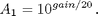
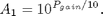
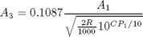
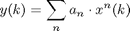
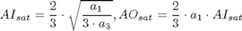

Contents
GainClass
Parent class: AttributeClass. Gain and non-linearity attribute of RF/analog block.
Properties
Inherited Properties
BaseClass * Name - Object name
Methods
A1
Voltage gain of the first order therm (in linear metrics). Default value is 1. When gain is specified in dB then set the value of A1 to:

When power gain is specified (in dBm) then set A1 to:

A3
Voltage gain of the third order therm (in linear metrics). Default value is 0.
Aisat
Maximum voltage at the RF/analog block input.
A0sat
Maximum voltage at the RF/analog block output.
CP1
1dB compression point
GainClass@GainClass
OBJ=GainClass(NAME);
The GainClass object constructor. The constructor calls for the update member of the class that computes the values of Aisat and Aosat.
OBJ=GainClass(NAME,A1,CP1)
An common way to model the gain and non-linearity of an RF/analog block is the voltage gain A1 (in dB) and the 1dB compression point CP1 (in dBm). The 1dB compression point is situated in interception of the input vs. output gain characteristics looses 1dB amplification with respect to it's ideal value. The 1dB compression point is approximatly 10dB lower than the IIP3 (the third order intercept point). When A1 and CP1 is used to instantiate the gainclass the A3 si computed with:

where R=1 Ohm. For the following syntax the R can be transmitted to the constructor:
OBJ=GainClass(NAME,A1,CP1,R)
set.A1@GainClass
OBJ=set.A1(OBJECT,VALUE)
Method invited when A1 is accessed for writing. The member invites update to compute the values of Aisat and Aosat. VALUE is considered to be in the linear scale.
set.A3@GainClass
OBJ=set.A1(OBJECT,VALUE)
Method invited when A3 is accessed for writing. The member invites update to compute the values of Aisat and Aosat. VALUE is considered to be in the linear scale.
effect@GainClass
Gain and non-linearity is a common attribute of RF/analog blocks. The effect is computed with the next formula:

where a1 is the voltage gain and a3 is the gain of the third order component.
OUTP=effect(OBJECT, INP)
The method implements gain and nonlinearity attribiute of an RF/analog block. The signal INP is recommended to be an object of SignalClass. The return OUTP is amplified and effected by non-linearity.
update@GainClass
update(OBJECT);
The method is executed when the object is constructed, A1 or A3 are accessed. It computes the input and output saturation voltages:
